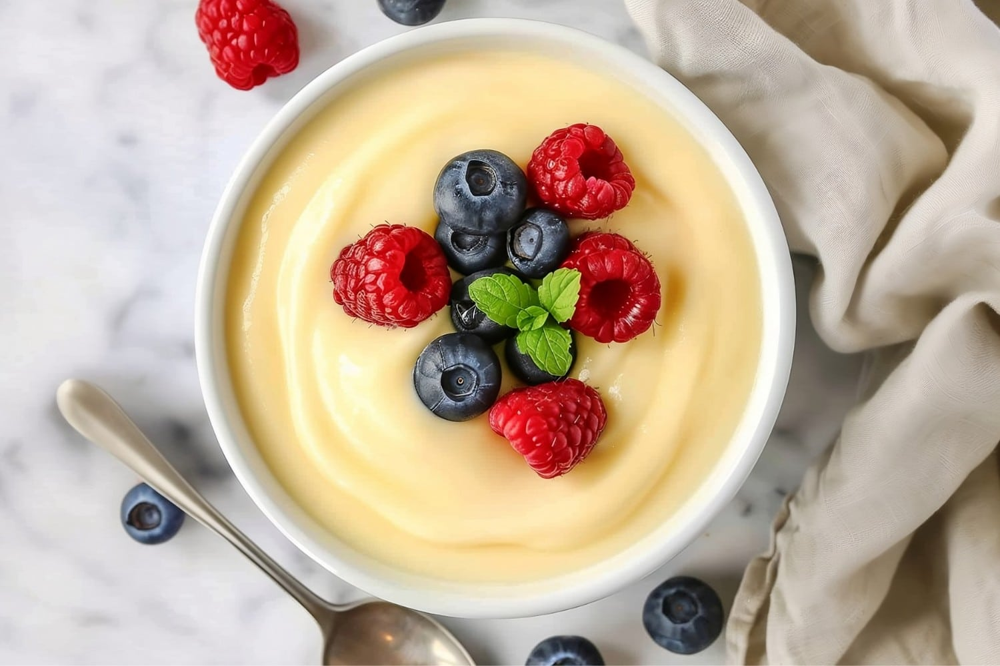

Puddings & Custards

Video
Classic Vanilla Custard
Silky smooth custard flavored with vanilla bean.
- Heat milk, cream, and vanilla until warm.
- Whisk egg yolks with sugar, then slowly add hot milk.
- Cook on low heat until thickened.
- Chill before serving.
Video